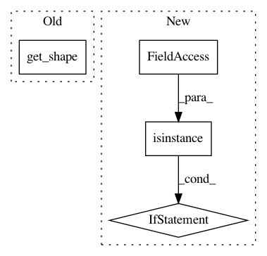

741ad9fb33a98023d76c6b962ae77183745d4ffa,tensorlayer/models/core.py,Model,__call__,#Model#Any#Any#,62
Before Change
// check inputs
if isinstance(self._inputs, Layer):
print(self._inputs._outputs_shape)
print(inputs.get_shape().as_list())
exit()
// TODO: check inputs corresponds with self._inputs
After Change
elif isinstance(inputs, np.ndarray):
inputs = tf.convert_to_tensor(inputs)
inputs_list = inputs if isinstance(inputs, list) else [inputs]
outputs_list = self._outputs if isinstance(self._outputs, list) else [self._outputs]
results = list()
memory = dict()
In pattern: SUPERPATTERN
Frequency: 3
Non-data size: 4
Instances
Project Name: tensorlayer/tensorlayer
Commit Name: 741ad9fb33a98023d76c6b962ae77183745d4ffa
Time: 2019-01-17
Author: jingqing.zhang15@imperial.ac.uk
File Name: tensorlayer/models/core.py
Class Name: Model
Method Name: __call__
Project Name: keras-team/keras
Commit Name: 36916af601ebd387f6ebee007b6f8c99a7605a37
Time: 2021-01-08
Author: scottzhu@google.com
File Name: keras/utils/losses_utils.py
Class Name:
Method Name: remove_squeezable_dimensions
Project Name: Bihaqo/t3f
Commit Name: 6a556613504284ab821ece0068553823b19060cd
Time: 2017-03-15
Author: novikov@bayesgroup.ru
File Name: t3f/tensor_train_batch.py
Class Name: TensorTrainBatch
Method Name: __getitem__